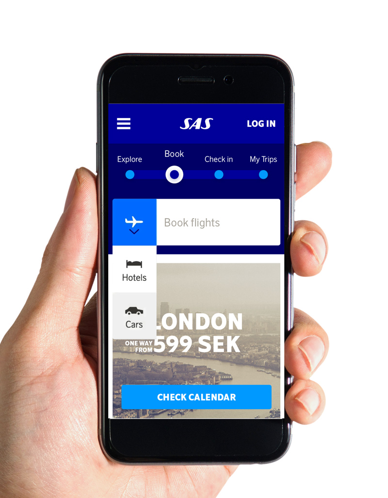

Transparency you can trust
World-class technology gives you access to every last detail before booking – including tail number, operator name, safety information, aircraft photos and interior amenities.Learn more »
Smart technology in the palm of your hand
Compare, book and manage flights on smartphone and online, with instant price estimates and in-app flight management on tap, at a tap.Learn more »
Connected and in control
With 24/7 customer service, mechanical recovery insurance, no upfront capital and all monies held in an HSBC client deposit account, your booking is guaranteed.Learn more »

With access to over 5,000 aircraft worldwide, Norwegian has the experience in locating the best possible aircraft for your mission. Operators providing service for Norwegian clients in the United States must meet standards set forth by the Federal Aviation Administration (FAA) for safety, security and service and operate under Part 135 of the FAA regulations.
Learn more »
With access to over 5,000 aircraft worldwide, Norwegian has the experience in locating the best possible aircraft for your mission. Operators providing service for Norwegian clients in the United States must meet standards set forth by the Federal Aviation Administration (FAA) for safety, security and service and operate under Part 135 of the FAA regulations.
Learn more »
With access to over 5,000 aircraft worldwide, Norwegian has the experience in locating the best possible aircraft for your mission. Operators providing service for Norwegian clients in the United States must meet standards set forth by the Federal Aviation Administration (FAA) for safety, security and service and operate under Part 135 of the FAA regulations.
Learn more »